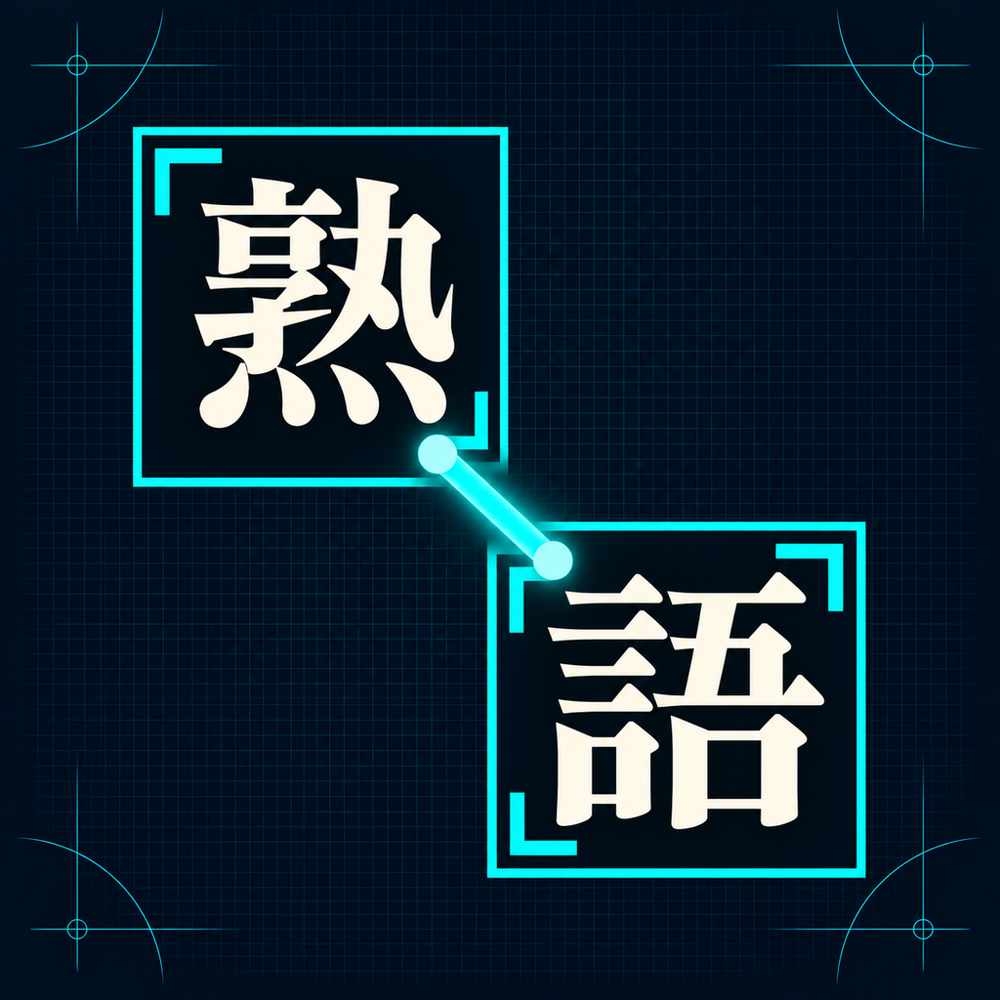

iPhoneアプリ サポート
遊び方のご質問や、熟語が認識されないなどの不具合は、メールでご連絡ください。
r3ach.app@gmail.com
判定については、問題番号・選んだ二字・なぞった順番を添えていただくと確認しやすくなります。
8×8の盤面から、縦・横・斜めに隣り合う二字を順になぞります。二字を順にタップしても選べます。異なる熟語を10語見つけるとクリアです。
何度でも使えます。「日中」と「中日」のように逆から読んで別の熟語になれば、それぞれ一語として数えます。
盤面の「中断」からホームに戻り、「つづきから」を選ぶと再開できます。